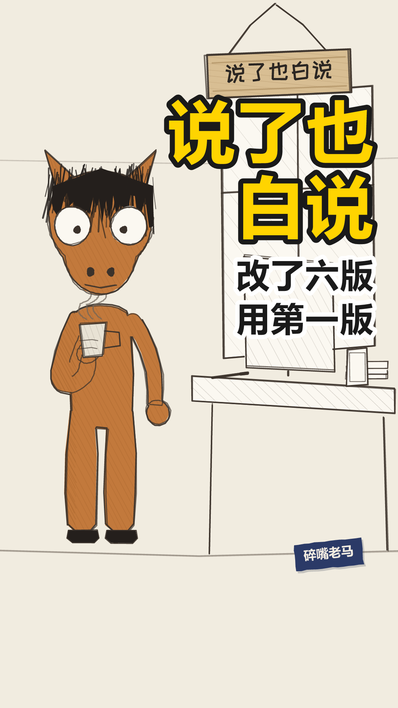

laoma-018
成片 · 场景图 · 对话内容 · 音色设置 · 分析思路
laoma-018
累积式 · office-desk
片长 32.0s
笑点 25.3s
定格 30.0s
ma=老马
成片
out.mp4 0.0s
0.0s铺垫
ma
早上第一个到，晚上最后一个走
老马
平
 2.6s
2.6s铺垫
ma
中间那八个小时干了啥，我也说不太清
老马
平
 6.1s
6.1s铺垫
ma
开会我从来不说话。不是没意见，是说了也白说
老马
平
 9.9s
9.9s铺垫
ma
说了也白说这话我也不敢说，怕说了更白说
老马
平
 15.0s
15.0s铺垫
ma
方案我改了六版，最后用的第一版
老马
平
 17.6s
17.6s回应
ma
领导说，还是最初的感觉最好
老马
平
 20.3s
20.3s铺垫
ma
我说是啊。心里想的是，那你倒是早说啊
老马
平
 25.3s
25.3s反转 · 笑点
ma
不过这样也挺好，至少我知道了，我第一版就挺行
老马
叙平
封面 / 开场 / 定格 / 钩子



落地方案 · 分镜表 · 发布文案方案.md ↗
laoma-018 落地方案
带AUTO标记的区块由npm run preview从当前配置重新生成，改了会被覆盖。
其余部分随便改，重新生成时原样保留。
一、稿件定位
- 类型 A 类（管线上的时间轴结构）／体裁：累积式（
format: "cumulative"） - 一句话讲什么 他把「早到晚走」当成人设立起来，然后一层一层自己拆掉：话不敢说、方案白改，最后连委屈都不提了，只留一句自我安慰。
- 为什么这么分镜 一个人从头说到尾，不切镜。节拍全交给字幕分屏和两处「留一拍」——第 4 句（绕口令的顶点）和第 7 句（沉底前那一拍）。
- 不能动的地方
- 第 7 句的 gap: 0.45：「我说是啊。」和「心里想的是」之间那个空，是全片最响的地方。并成一屏就没有嘴上和心里的落差了。
- 第 6 句一屏不拆：「领导说，」单独成屏只有半秒多，读不完——字幕规范的 0.6 秒硬底线就是拦这个的。
- 闭目 0.9 秒（第 4 句）：全片唯一一次，靠那一拍留白才塞得下。
- 落点第 1 屏逐字「不过这样也挺好」，gap: 0.5 是给那一拍腾的位置。
- 不出收尾卡、不带日子牌：累积式不占老马那条时间轴。
二、分镜表
| 时间 | 画面 | 台词 | 音效 / BGM |
|---|---|---|---|
| 0:00.0–0:00.0 | 开场空镜 场景 office-desk | — | BGM 关 |
| 0:00.0–0:02.2 | 场景 office-desk 在场 ma 单人镜立人设：一个「勤勉」的人。两小句同构，一句一屏，重复要看得见。 | ma：早上第一个到，晚上最后一个走 | — |
| 0:02.6–0:05.7 | 同上 自己拆掉：勤勉是时间上的，中间那段是空的。这一句一出来，上一句的人设就塌了。 | ma：中间那八个小时干了啥，我也说不太清 | — |
| 0:06.1–0:09.5 | 同上 累积①：不说话的理由。三小句一句一屏，第三小句「说了也白说」是下一句的引信。 | ma：开会我从来不说话。不是没意见，是说了也白说 | — |
| 0:09.9–0:13.8 | 同上 累积②：绕口令式的自我套娃，全片密度最高的一句。说完留一拍 ＋ 闭目 0.9——全片唯一一次闭目，读作认命，不是眨眼。 | ma：说了也白说这话我也不敢说，怕说了更白说 | — |
| 0:13.9–0:14.8 | 闭目 0.9s 不是眨眼 —— 忍耐 | — | 静音 |
| 0:15.0–0:17.2 | 同上 累积③：从「说话」换到「干活」，同一个机制换个地方再来一次。钩子埋在这儿——「第一版」落点要拿它结账。 | ma：方案我改了六版，最后用的第一版 | — |
| 0:17.6–0:19.9 | 同上 话锋转了：前面是他自己怎么熬，这一句是别人一句话把六版一笔勾销。全片唯一一次扭头。一屏，不拆——「领导说」单独一屏只有半秒，读不完。 | ma：领导说，还是最初的感觉最好 | — |
| 0:20.3–0:23.8 | 同上 嘴上和心里分两屏，中间空 0.45 秒——那个空就是全片最响的地方。说完留一拍，给沉底句助跑。 | ma：我说是啊。心里想的是，那你倒是早说啊 | — |
| 0:25.3–0:29.7 | 同上 沉底：往下沉半寸，不往上扬。签名屏「不过这样也挺好」自成一屏、停一拍，再一层一层落到「我第一版就挺行」——最后那个词才是笑点。「第一版」在这儿结账。 | ma：不过这样也挺好，至少我知道了，我第一版就挺行 | — |
| 0:30.0–0:32.0 | 定格去色 不出收尾卡 | — | BGM 骤停 |
三、场景 / 角色 / 节奏
场景 office-desk
节奏 standup-fast
句内 0.25/0.15s 句间 0.40s 换镜 0.90s
| 角色 | 形象 | 音色 |
|---|---|---|
| ma | horse x=290 | 老马 |
片长 32.01s 8 句 1 个分镜
四、发布文案
发平台时直接抄这一段。
- 标题候选
1. 开会我从来不说话，不是没意见，是说了也白说 ←主选
2. 方案改了六版，最后用的第一版
3. 早上第一个到，晚上最后一个走，中间八小时说不清
- 内容关键词 开会 / 不说话 / 方案 / 改版 / 领导
- 热度关键词 职场 / 加班 / 开会 / 改方案 / 打工人
- 话题标签 #开会 #改方案 #职场日常
- 简介
> 早上第一个到，晚上最后一个走。中间那八个小时干了啥，我也说不太清。
>
> 开会我从来不说话。不是没意见，是说了也白说。
> 方案我改了六版，最后用的第一版。
- 封面大字
说了也白说
五、人工核对
- 每一镜的画面和台词对得上（看 index.html 的场景图）
- 音画同步：配音起点落在字幕窗口内
- 站位：
npm run layout零冲突 - 节奏：句间缓冲听着不赶
- 内容风控